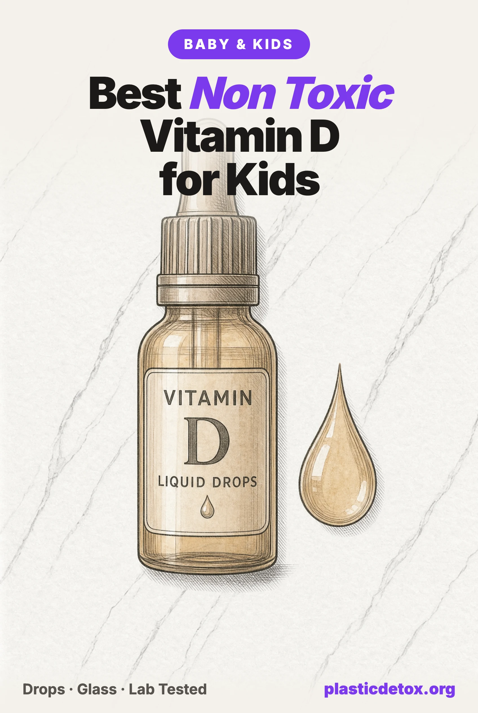

Best Non Toxic Vitamin D for Babies and Kids: What Testing Found, and What the Dropper Gives (2026)

The 30 Second Summary
- Nine of twelve children's vitamins sent to an independent lab tested positive for lead. The two that came back non detect for lead, cadmium, arsenic and mercury were both liquid drops, and the highest results were all chewables and gummies.
- The dispenser decides the worst case dose. The FDA asked in 2010 that an infant dropper hold no more than 400 IU. It was guidance, never a rule, and squeeze bottles and graduated syringes still hold multiples of a daily dose.
- Our top pick is Baby Ddrops Organic 400 IU. Two ingredients, amber glass, one drop is exactly one dose, and it is the only infant vitamin D we found with a published independent non detect for all four heavy metals at 5 ppb.
- Three more clear it: Carlson Baby's Super Daily D3 for a year in one bottle, Wellements Organic Vitamin D Drops on an olive oil base, and Ddrops Kids Booster 600 IU once a child turns one.
- The most reviewed baby vitamin D on Amazon is not one of them. Its maker received an FDA warning letter in April 2025 and has two open recalls on a sibling baby drops product.
- Glass is not a detail here. Vitamin D3 has to ride in an oil, and oil is the solvent that pulls additives out of plastic. All four picks are amber glass.
Why This One Supplement Is Different
Almost nothing on a baby registry is something a pediatrician asks you to use every single day. Vitamin D is. The American Academy of Pediatrics recommends 400 IU a day for every infant from the first days of life, and 600 IU a day after the first birthday. Breast milk does not supply it in useful amounts whatever the mother eats, and a formula fed baby only covers it past 27 ounces a day. So this is a daily dose into a newborn, from one small bottle, for a year or more.
That daily repetition changes the calculus twice over. A contaminant at a level that would be trivial in a food eaten once a month is a standing exposure here. And because vitamin D is fat soluble, it has to be dissolved in an oil, which makes the container a chemistry question rather than a packaging preference. Oil is the solvent that pulls plasticisers and processing additives out of plastic, the same fat, heat and time mechanism behind the plastic film inside a glass jar lid. A bottle of oil opened daily for three months is the time half of that equation.
Fat solubility has a second consequence. An excess of a water soluble vitamin leaves in urine. An excess of vitamin D accumulates, which is why the dosing device on the bottle belongs in a safety review and not in the convenience column.
What Independent Testing Found
In December 2024 Lead Safe Mama published results for twelve popular children's vitamins, sampled through SimpleLab and analysed at SGS North America. Nine tested positive for lead, five for cadmium and seven for arsenic, and four were positive for all three. The panel is not a ranking of the whole category, and it mixes multivitamins with single nutrient products. What makes it the most useful data we have is that it put drops and gummies on the same page with the same method.
The pattern is hard to miss. Both non detect results were liquids: Baby Ddrops Organic Vitamin D3 and MaryRuth's Toddler Multivitamin. Every result above 20 ppb of lead was a chewable, a gummy or a powder. That is not a mystery once you count the ingredients. A drop of vitamin D is an oil and a vitamin. A gummy is sugars, starches, gelling agents, acids, colours and flavours, and each of those is a separate agricultural supply chain with its own soil.
Two results outside that panel matter for this category. In January 2025 the same lab measured 12 ppb of lead in Pure Encapsulations Vitamin D3 capsules, with cadmium, arsenic and mercury non detect at 5 ppb, on an adult 5,000 IU product from a brand whose name is a purity claim. And in March 2025 Nordic Naturals Kids Vitamin D3 Gummies came back non detect for all four metals at Purity Laboratories by ICP-MS, at limits of 5 ppb for lead, cadmium and mercury and 10 ppb for arsenic. That is the only children's vitamin D gummy we found with a published independent non detect, and it is still not our pick, for reasons in the caution cards below.
Here is the primary source for the top pick, because a non detect means nothing without the limit behind it. Report G3WR5S, collected November 30, 2024 and reported December 11, 2024, tested Organic Baby Ddrops liquid vitamin D3 by AOAC method 2015.01 at SGS North America. Arsenic, cadmium, lead and mercury: all not detected, with both the method detection limit and the reporting limit at 5 micrograms per kilogram.
What the Numbers Are Measured Against
Nothing. There is no federal limit on lead, cadmium, arsenic or mercury in a dietary supplement sold for children, so every product in that panel was legal, including the one at 60 ppb of lead. The bars we use are the action levels Congress proposed in the Baby Food Safety Act of 2021, which are 5 ppb lead, 5 ppb cadmium, 10 ppb arsenic and 2 ppb mercury. That bill never became law. FDA did set a lead action level of 10 ppb in January 2025, but only for processed food intended for babies and young children, which is a different category from a supplement.
We say this plainly because the alternative is to imply a legal standard that does not exist. A result at or above one of those proposed levels is a caution on our Product Check record. It is not a violation of anything, and a brand can truthfully say so.
Already have a bottle on the shelf? Type the brand into our free Product Check to see the ingredient read, the recall history and any independent lab result we hold for it.
The Dose the Dropper Gives
On June 16, 2010 the FDA warned parents that droppers sold with liquid vitamin D can hold considerably more than an infant should receive. It asked manufacturers to mark droppers clearly and accurately for 400 IU, and for infant products, to supply a dropper that holds no more than 400 IU. Sixteen years later that is still guidance rather than a requirement, and the shelf reflects it.
The published harm cases are almost never a parent deciding to give more. They are concentration errors. In one 2023 case report a two and a half month old was given a vitamin D3 product at the wrong strength from the third day of life. Serum calcium reached 6.0 mmol per litre against a normal 2.1 to 2.5, and 25 hydroxy vitamin D passed 160 ng per millilitre against a normal 30 to 50. Blood levels normalised over two months of treatment. Bilateral medullary nephrocalcinosis and calcification in the liver did not resolve.
Reviews of pediatric cases describe the same shape repeatedly: a caregiver gave droppersful where the label meant drops, sometimes because a dropperful had been the correct dose of a previous product. So the question to ask of a bottle is not how accurate the dose can be, but how wrong it can go. Three designs answer that very differently.
What Should Be in the Bottle
A good infant vitamin D has two ingredients, sometimes three. The vitamin should be D3, cholecalciferol, not D2, ergocalciferol, which is weaker at raising and holding blood levels. Most D3 is made from lanolin, the wax in sheep's wool, and the vegan version comes from lichen. Both are the same molecule, so that choice is ethical rather than toxicological.
The carrier should be an edible oil: fractionated coconut oil, which is the same thing as MCT oil, or extra virgin olive oil. Both are fine. What should not be there is a base of vegetable glycerin and water, which is what some flavoured children's drops use, or a flavour, or a sweetener, or a colour. A newborn has no preference to satisfy, and every added ingredient is another supply chain. Flavour also arrives as an undisclosed mixture behind a single word, which caps a product at caution under our own rules whatever else is right about it.
And What the Bottle Should Be
No laboratory has published microplastic counts for vitamin D supplements, so this part of the case is mechanism rather than measurement, and we label it that way in our guide to plastic in supplements. What is measured is next door: Korean researchers found encapsulated fish oil carried three to five times the microplastic load of the raw oil it was made from, and a 2024 Australian study found particles in all nine fibre supplements tested.
The inference for an oil based infant drop is straightforward and does not need a study to be actionable. Amber glass removes the question for pennies, most of the category already uses it, and there is no reason to accept a soft plastic bottle holding oil when three glass options sit beside it. All four picks here are amber glass. The dropper insert and the cap are still plastic, which is honest to state, but neither holds a standing reservoir of oil the way a bottle wall does.
The Picks
Four products clear our four checks: the full ingredient list, the materials in contact with the oil, independent test results where they exist, and a current recall and lawsuit search. Only one of the four carries an independent heavy metals result, which is why it leads, and we say plainly where the other three have a gap rather than filling it with a brand's own assurance.

Baby Ddrops Organic 400 IU
Amber glass, 2.5 mL, 90 drops, newborn and up. Two ingredients: organic fractionated coconut oil and D3. One drop is 400 IU. Non detect for all four heavy metals at 5 ppb.
View →
Carlson Baby's Super Daily D3
Amber glass, 10.3 mL, 365 drops. 400 IU per drop in coconut MCT oil, for infants through 12 months. IGEN non GMO tested. No independent heavy metal result published.
View →
Wellements Organic Vitamin D Drops
Amber glass, 4.5 mL, 90 servings, newborn to three years. 400 IU per drop in organic extra virgin olive oil and palm MCT. USDA Organic and Non GMO Project Verified.
View →
Ddrops Kids Booster 600 IU
Amber glass, 2.8 mL, 100 drops, ages one and up. 600 IU per drop, the AAP figure for over ones, in fractionated coconut oil. Two ingredients, no flavour.
View →Baby Ddrops Organic is the top pick on the strength of the lab report, and it happens also to be the best reviewed infant vitamin D on Amazon at 4.8 stars across more than 14,700 ratings. The label lists organic fractionated coconut oil and vitamin D3 and nothing else. One drop is 400 IU, and the euro dropper insert releases a single drop at a time, which is the design the FDA asked for in 2010. The label directs you to put the drop on a clean surface, a washed finger, a pacifier or food rather than into the mouth, which also keeps the dispenser out of contact with a baby.
Carlson Baby's Super Daily D3 holds 365 drops in 10.3 mL, so one bottle covers the whole first year. 400 IU per drop, in medium chain triglyceride oil from coconut, in amber glass. Carlson lab tests its own potency and purity and carries IGEN non GMO certification, which verifies GMO status and says nothing about metals, so we record this one as having no independent contaminant result rather than treating a certification as one.
Wellements Organic Vitamin D Drops is the pick if you want the organic olive oil base and the shortest list of what is absent. The whole Wellements baby line is bottled in glass and sold free of dyes, parabens, alcohol and preservatives, and the drops are USDA Organic and Non GMO Project Verified. One drop is 400 IU, for newborn to three years. Wellements has two recalls on its FDA record, both terminated and both on other products, covered below.
Ddrops Kids Booster is the one to move to at the first birthday, when the AAP figure rises to 600 IU. One drop delivers exactly that, with the same two ingredient list and the same glass bottle and single drop dispenser. It is a different SKU from the one the lab tested, so the non detect result does not carry across to it, and we do not pretend otherwise: a clean result on one product tells you nothing about its sibling.
The Picks Side by Side
| Product | Per drop | Bottle | Ingredients | Independent metals result | Verdict |
|---|---|---|---|---|---|
| Baby Ddrops Organic | 400 IU | Amber glass, 2.5 mL | 2 | Non detect, all four, 5 ppb | Top pick |
| Carlson Baby's Super Daily D3 | 400 IU | Amber glass, 10.3 mL | 2 | None published | Pick |
| Wellements Organic Vitamin D | 400 IU | Amber glass, 4.5 mL | 3 | None published | Pick |
| Ddrops Kids Booster | 600 IU | Amber glass, 2.8 mL | 2 | None published | Pick, age one and up |
| Mommy's Bliss Organic Baby Vitamin D | 400 IU | Plastic squeeze, 3.24 mL | 2 | None published | Plastic bottle, FDA letter |
| Zarbee's Baby Vitamin D | 400 IU per 0.25 mL | Amber glass, 14 mL | 2 | None published | 2016 recall, 0.5 mL syringe |
| Nordic Naturals Baby Vitamin D | 400 IU per 0.25 mL | Glass with pipette, 22.5 mL | 2 | None on this product | Recall history |
| MaryRuth's Infant & Toddler D3 | Dose is 5 to 8 drops | Glass with pipette, 15 mL | 2 | None on this product | Multi drop dose, 6 months up |
| Genexa Vitamin D Drops for Infants | 400 IU per 2 drops | Not stated | 3, with a flavour | None published | Undisclosed flavour |
| Dr. Green Mom D3 with K2 | 400 IU | Not stated | Not published | None published | FDA warning letter |
| ChildLife Essentials Baby D3 | Dose is 5 to 8 drops | Glass with pipette, 30 mL | 3, glycerin and water base | None published | Flavoured, multi drop dose |
Ingredient counts exclude the vitamin itself. A result of none published is a disclosed gap and not a mark against a product: almost nothing in this category has been independently tested, and a maker does not control whether a lab looks. What it does mean is that only the top pick can point at a measurement rather than a promise.
Products We Did Not Pick
Mommy's Bliss Organic Baby Vitamin D Drops
On the label this is a reasonable product: two ingredients, organic MCT oil and D3, USDA Organic, newborn and up, and one drop is 400 IU. It is also the most reviewed baby vitamin D on Amazon, with more than 15,000 ratings. Two things keep it out of the picks.
The bottle is a soft plastic squeeze bottle holding an oil, which is the one configuration this article argues against, and a squeeze gives as many drops as the squeeze allows. More seriously, its maker M.O.M. Enterprises received an FDA warning letter on April 22, 2025 following an inspection of its Richmond, California facility. FDA cited failure to extend a spoilage complaint investigation to all relevant batches, failure to follow its own written complaint procedures, and failure to report serious adverse events, including infants who choked, stopped breathing or were hospitalised after Gripe Water.
FDA's enforcement record also shows two recalls of Organic Baby Bedtime Drops for potential yeast contamination, reported in September and October 2025, both still listed as ongoing. Neither the warning letter nor the recalls names the vitamin D drops. They do concern the same facility, the same liquid baby drops format and the same complaint handling that the warning letter found inadequate, which is enough for a caution on the products sharing it. Between that and an oil in a plastic squeeze bottle, which fails our materials check on its own, this is the one product here we would actively swap out rather than simply pass over.
Nordic Naturals
Nordic Naturals recalled a lot of Baby's Vitamin D3 Liquid in April 2024 for elevated levels of vitamin D3, a Class II recall now terminated, and that is the exact product line a parent would buy here. In June 2025 it recalled Zero Sugar Kids Multivitamin Gummies as mislabelled, Class III, also terminated. Its Children's DHA measured 14 ppb of lead in the 2024 panel.
The same brand holds the best gummy result we found. Its Kids Vitamin D3 Gummies came back non detect for lead, cadmium, arsenic and mercury in March 2025 at Purity Laboratories. We report that as readily as the rest, and it is why the brand sits at careful rather than skip. The current Baby Vitamin D Drops are dosed at 0.25 mL from a pipette, not one drop, and carry no independent result of their own.
Hiya Kids Daily Multivitamin
Hiya is the most heavily marketed children's vitamin in the US and it is not a vitamin D product, but parents ask about it in the same breath, so here is the record. In September 2024 independent testing measured 30 ppb lead, 20 ppb cadmium and 310 ppb arsenic in Hiya Kids Daily Multivitamins, the highest arsenic of the twelve products in that panel.
Hiya disputes the finding and points to its own heavy metals testing, and in May 2025 it became Clean Label Project Certified, with a Purity Award on the Kids Daily Multivitamin. That is a real independent programme and it is newer than the 2024 test. It also does not publish per product numbers, so there is no measurement to set beside the 2024 one, and a result we cannot see cannot clear a result we can. Both findings stand on the record together.
Zarbee's, MaryRuth's and ChildLife
Zarbee's Baby Vitamin D is two ingredients, MCT oil and D3, in a 14 mL amber glass bottle, and the formula and container are both fine. Two things keep it off the list. FDA lists a July 2016 Class III recall covering this product and Zarbee's Baby Omega 3, for units that may contain contaminants at an elevated aerobic plate count; it is terminated and, at nine years old, informational. And the dose is 0.25 mL read off a 0.5 mL oral syringe, so the device holds twice a day's vitamin D and the dose depends on reading a graduation every time.
MaryRuth's USDA Organic Infant & Toddler D3 is organic olive oil and D3, and MaryRuth's Toddler Multivitamin was one of the two non detect results in the 2024 panel. That result belongs to the multivitamin, not to these drops, and a clean test never transfers to a sibling product. The drops are also labelled for six months and up, with a dose of five drops for infants and eight for toddlers.
ChildLife Essentials Baby Vitamin D3 Drops is the one formula here we would avoid on the label alone. The base is vegetable glycerin and deionised water rather than an oil, it adds a natural mixed berry flavour, which is an undisclosed mixture behind one word, and the dose is five drops for infants and eight for children.
Genexa and Dr. Green Mom
Genexa's infant drops are D3 in organic sunflower seed oil, a sound base, and the dose is two drops rather than one. The list then ends in an organic vanilla flavour, an undisclosed mixture behind a single word, which is the same disclosure problem as the berry flavour above and caps the formula at caution. There is no reason to accept it when three unflavoured options sit beside it.
Dr. Green Mom's babies and kids D3 with K2 drops show five stars on a few dozen reviews and no complete ingredient list on the listing, only MCT oil. FDA issued Dr. Green Mom, LLC a warning letter on 30 January 2023 naming its Vitamin D among six products sold with disease treatment claims, including disease prevention, cold and flu and depression. That is about marketing rather than contamination, and we found no close out letter since. A live FDA action naming the product is a failed legal check by our own rules, so this one rates skip rather than careful, and nothing the brand says about itself can clear a check while it stands.
The two Wellements recalls
Wellements is a pick, and its FDA record carries two Class I recalls: Iron Drops and the Iron Drops sampler in August 2020, for undeclared milk in two lots, and Baby Move Prune Concentrate in 2012. Both are terminated, both concern other products, and both were labelling and supplier issues rather than contamination of the drops. At more than five years old they are informational on our record rather than a live caution, and we list them so you are not surprised to find them.
The Gummy and Chewable Aisle
The 2024 panel is the clearest picture available of what a children's chewable actually contains, and the numbers below are all lead first, then whatever else was elevated. Flintstones Vitamin + Extra Iron: 60 ppb lead, the highest in the panel, and 30 ppb arsenic. EllaOla Toddlers' Multivitamin: 50 lead, 20 cadmium, 120 arsenic. SeekingHealth Kids Multivitamin Chewables: 24 lead, 25 cadmium, 62 arsenic. Pure Encapsulations Junior Nutrients: 23 lead and 102 cadmium, the highest cadmium measured. VitaKlenz for Kidz: 23 lead, 39 arsenic. Renzo's Picky Eater Multi with Iron: 21 lead, 9 cadmium. SmartyPants Kids Multi & Omegas: 6.54 lead.
None of those is a vitamin D product specifically, and that is part of the point. A child who needs 600 IU of vitamin D does not need a multivitamin to get it, and a multivitamin is where the contamination load concentrates, because iron, minerals and plant powders are the ingredients that carry metals. A single nutrient in an oil is a much shorter supply chain than a gummy with a dozen inputs.
There is one honest exception. Nordic Naturals Kids Vitamin D3 Gummies did come back non detect at 5 ppb for lead, cadmium and mercury and 10 ppb for arsenic in March 2025, so a clean gummy is possible. If a school aged child will genuinely not take drops, that result is the best evidence in the format, with the brand's recall history in the same breath. For everyone else a drop on a spoon, in yoghurt or in a drink is simpler, cheaper per dose and better evidenced.
Check the IU per drop every time the bottle changes
The published overdose cases are concentration errors, not deliberate ones. Drops are sold at 400, 600, 1,000, 2,000 and 5,000 IU per drop, in bottles that look nearly identical, and a caregiver who learned one bottle's routine can carry it to the next. When you buy a new bottle, read the IU per drop before the first dose, and keep the adult bottle in a different place from the baby's.
Signs of too much vitamin D in a baby are vomiting, poor appetite, unusual thirst, frequent urination, constipation and failure to gain weight. Call your pediatrician rather than adjusting the dose yourself, and do not go above 600 IU a day in a child without a blood level to justify it.
How Much, and For How Long
The AAP figures are simple. Every baby gets 400 IU a day from the first days of life until the first birthday, breastfed, mixed fed or formula fed, with the single exception of a baby already drinking more than 27 ounces a day of fortified formula. From one year it becomes 600 IU a day, and stays there through adolescence, so the birthday is a change of dose and not an end to it.
Vitamin D is fat soluble, so it absorbs best alongside something with fat in it. For a baby that is already true of milk or formula, and for an older child a drop on food at a meal works better than one on an empty stomach. Sunlight does make vitamin D in skin, but how much depends on latitude, season, time of day, skin tone, cloud and sunscreen, which is why pediatric guidance does not count on it. Cutting sun protection to raise vitamin D trades a known benefit for an unreliable one.
Store the bottle upright at room temperature, out of sun, and keep the cap on. None of these four needs refrigeration. If the oil ever smells rancid or sour, throw it out.
Frequently Asked Questions
How much vitamin D does a baby need?
The American Academy of Pediatrics recommends 400 IU (10 mcg) a day for every baby up to age one, starting in the first days of life, and 600 IU (15 mcg) a day for children over one. The one exception is a baby already drinking more than 27 ounces a day of fortified commercial formula, which supplies it. Breast milk does not, whatever the mother's own intake, which is why this is the one supplement pediatricians ask nearly every family to give a newborn daily for a year.
Are vitamin D drops better than gummies for kids?
On the evidence so far, yes. In Lead Safe Mama's 2024 panel of twelve children's vitamins, nine tested positive for lead, and the two products that came back non detect for lead, cadmium, arsenic and mercury were both liquids. The lowest results in the panel were drops and the highest were chewables and gummies, which carry far more non vitamin material per dose: sugars, starches, gelling agents, colours and flavours, each one a separate supply chain. Drops also let you give an exact dose to a six month old, which a gummy cannot.
Why does the dropper matter more than the brand?
Because the dispenser sets the worst case dose. In June 2010 the FDA warned that droppers packed with liquid vitamin D can hold considerably more than an infant should get, and asked manufacturers to mark droppers clearly for 400 IU and to make infant droppers hold no more than 400 IU. That was guidance, not a rule, and it still is. A bottle where one drop is exactly one dose cannot be overdosed by a tired parent at 3am. A squeeze bottle or a graduated syringe can.
Can a baby get too much vitamin D from drops?
Yes, and the published cases almost always involve a concentration error rather than deliberate overdosing. In one 2023 case report a two and a half month old was given a vitamin D3 product at the wrong concentration from the third day of life. Serum calcium reached 6.0 mmol per litre against a normal range of 2.1 to 2.5, and 25 hydroxy vitamin D passed 160 ng per millilitre against a normal 30 to 50. After treatment the blood levels came back to normal over two months, but bilateral medullary nephrocalcinosis and calcification in the liver remained. Vitamin D is fat soluble, so an excess accumulates instead of being flushed out.
Does the bottle material matter for vitamin D?
More than for most supplements. Vitamin D3 is fat soluble, so it has to be carried in an oil, and oil is the solvent that pulls plasticisers and other additives out of plastic. That is the same fat, heat and time model that explains plastic in jar lids. A daily infant supplement sits open on a shelf for one to twelve months, which is the time half of the equation. Amber glass removes the question, which is why all four of our picks are in glass. The dropper insert or cap is still plastic, but it holds no reservoir of oil.
Is vitamin D3 from lanolin a problem, and is lichen D3 better?
No and not for safety. Most cholecalciferol, D3, is made from lanolin, the wax from sheep's wool, and the vegan alternative is made from lichen. Both deliver identical cholecalciferol and both raise blood levels the same way. The choice is ethical, not toxicological. What does matter is D3 rather than D2, ergocalciferol, which is less effective at raising and holding blood levels. Every pick here is D3.
Is there a legal limit on lead in children's vitamins?
No. There is no federal limit on lead, cadmium, arsenic or mercury in a dietary supplement sold for children. The numbers in this article are compared against the action levels Congress proposed in the Baby Food Safety Act of 2021, which are 5 ppb lead, 5 ppb cadmium, 10 ppb arsenic and 2 ppb mercury, and that bill never passed. FDA set a lead action level of 10 ppb for processed food intended for babies and young children in January 2025, but a supplement is not that category. So every product in the panel was legal, including the one at 60 ppb lead.
When should a child stop taking vitamin D drops?
Not at one. The AAP figure goes up at that point rather than away, from 400 IU to 600 IU a day, and stays there through adolescence. What changes is that a toddler drinking fortified cow's milk and eating a varied diet gets some from food, so the gap is smaller. Sunlight makes vitamin D in skin, but the amount depends on latitude, season, skin tone and sunscreen, which is why pediatric guidance does not rely on it. Ask your pediatrician for a blood level before going above 600 IU.
Related Articles
- Microplastics in Supplements
The form ranking behind this article, from liquid in glass down to softgels. - The Cleanest Prenatal Vitamins
The same testing problem in the supplement a mother takes, with the numbers brand by brand. - Best Non Toxic Baby Formula
Whether your formula already covers the vitamin D, and what else is in the can. - Baby and Kids 101
The step by step detox for families, ranked by impact. - Non Toxic Baby and Toddler Products Guide
The full product by product guide, from bottles to the car seat. - Microplastics in Baby Food
Where the particles in a baby's diet actually come from.